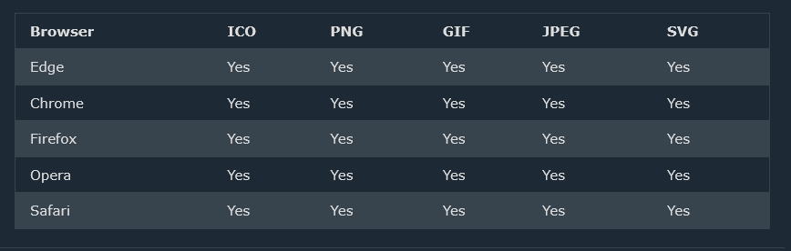

A favicon is a small image displayed next to the page title in the browser tab.
You can use any image you like as your favicon. You can also create your own favicon on sites like https://www.favicon.cc.
Tip: A favicon is a small image, so it should be a simple image with high contrast.
A favicon image is displayed to the left of the page title in the browser tab, like this:

To add a favicon to your website, either save your favicon image to the root directory of your webserver, or create a folder in the root directory called images,
and save your favicon image in this folder. A common name for a favicon image is "favicon.ico".
Next, add a <link> element to your "index.html" file, after the <title> element, like this:
<!DOCTYPE html>
<html>
<head>
<title>My Page Title</title>
<link rel="icon" type="image/x-icon" href="/images/favicon.ico">
</head>
<body>
<h1>This is a Heading</h1>
<p>This is a paragraph.</p>
</body>
</html>
Now, save the "index.html" file and reload it in your browser. Your browser tab should now display your favicon image to the left of the page title.
The following table shows the file format support for a favicon image:
* Use the HTML <link> element to insert a favicon